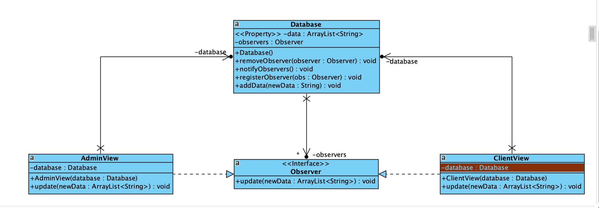

IFT 3911 - Devoir 3
Information générale
Nom: Jianxin You
Matricule: 20134401
Courriel: jianxin.you@umontreal.ca
temps mis: 40 heures
Nom: Sofiia Shton
Matricule: 20254200
Courriel: sofiia.shton@umontreal.ca
temps mis: 40 heures
Distribution des tâches
Soumetteur: Jianxin You
|
Tâche
|
JianXin
|
Sofia
|
|
Tout
|
50%
|
50%
|
Diagramme de classe pour le patron de fabriques
Diagramme de séquence ou de collaboration pour le patron de fabriques
Diagramme de classe pour le patron du singleton
Diagramme de classe pour le patron d'état
Diagramme de séquence ou de collaboration pour le patron d'état
Diagramme de classe pour le patron de l'observateur

Diagramme de séquence ou de collaboration pour le patron de l'observateur

Diagramme de classe pour le patron de commande
Diagramme de séquence ou de collaboration pour le patron de commande
Diagramme de classe pour le patron du visiteur
Diagramme de séquence ou de collaboration pour le patron du visiteur
Diagramme de classe pour les deux patrons de conception additionnels
1. Patron de stratégy
2. Patron de constructeur
Diagramme du paquet
Justification
Dans cette discussion, nous allons analyser la qualité du design de chacun des patrons de conception utilisés dans ce projet.
Fabrique :
Le patron de fabrique permet une meilleure modularité et flexibilité, en séparant la logique de création d'instances des entités de voyage de leur utilisation. Cela améliore également la maintenabilité du code en respectant le DIP. En utilisant ce patron, on peut réduire la dépendance entre les différents modules de l'application, ce qui réduit le couplage et favorise l'agrégation.
Singleton :
Ce patron assure qu'il n'y a qu'une seule instance de chaque fabrique dans l'application. Ça rendre le code plus coherent. En utilisant ce patron, le SRP est respecté.
État :
Le patron d'état facilite la gestion des différentes positions d'un siège ou d'une cabine. Il range la logique des positions dans des groupes séparés. Cela rend le code plus facile à lire et à modifier, et suit le SRP et le OCP. En utilisant ce patron, les différentes parties du programme ne sont pas trop liées, ce qui facilite l'ajout de nouvelles fonctions.
Observateur :
Le patron d'observateur permet de mettre à jour automatiquement les parties visibles de l'application lorsque quelque chose change dans les informations de base. Cela aide à garder toutes les parties de l'application en accord les unes avec les autres. Le patron suit le SRP en faisant en sorte que chaque partie de l'application soit responsable de ce qu'elle affiche. En utilisant ce patron, les différentes parties de l'application ne dépendent pas trop les unes des autres, ce qui facilite l'ajout de nouvelles fonctions.
Commande :
Le patron de commande facilite la gestion des actions de l'administrateur, en permettant d'annuler ces opérations. Cela respecte le SRP en garantissant que chaque commande est responsable de sa propre action. En utilisant ce patron, on peut réduire la dépendance entre les différents modules de l'application. Ça réduit le couplage et favorise l'agrégation.
Visiteur :
Le patron de visiteur permet d'afficher les entités de voyage de manière différente selon le contexte, en séparant la logique d'affichage de la structure des données. Ça améliore la lisibilité et la maintenabilité du code en respectant le SRP et le OCP. En utilisant ce patron, on peut également réduire la dépendance entre les différents modules de l'application, ce qui réduit le couplage et favorise l'agrégation.
Stratégie:
Tout d'abord, il permet une grande flexibilité en permettant à l'utilisateur de choisir entre différentes stratégies de paiement sans avoir à modifier le code source du système de paiement lui-même. Cela rend le système plus modulaire et évolutif.
De plus, le pattern "Strategy" respecte le SRP en permettant à chaque stratégie de paiement d'être encapsulée dans sa propre classe. Cela facilite la maintenance du code et permet de résoudre rapidement les problèmes liés à une stratégie de paiement spécifique.
En utilisant ce pattern, on peut également réduire la dépendance entre les différents modules du système de paiement, ce qui réduit le couplage (coupling) et favorise l'agrégation (aggregation).
Construteur :
Ce pattern vous permet de créer des instances de classes avec différentes options de configuration, ce qui simplifie l'écriture et l'utilisation du code. Chaque route a des composants différents, et en utilisant le pattern Constructeur, on utilise le constructeur approprié pour créer différentes routes avec différents composants.
De plus, ce patron respect le principe de SRP, car chaque constructeur est spécifiquement responsable de la création d'un type de route. Cela contribue à maintenir la lisibilité et la maintenabilité du code.
Le pattern Constructeur peut également vous aider à respecter le OCP, car on peut ajouter de nouveaux types de routes simplement en créant un nouveau constructeur sans avoir à modifier le code existant.
Il réduire le couplage entre les modules en limitant les dépendances et améliorer l'agrégation en regroupant les composants de route dans une même classe.